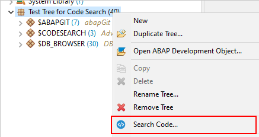

Version 1.1.0
ABAP Code Search
Features
Integration of
ABAP Tags
into Search Dialog
This allows the user to restrict the search scope to objects with specific tags
Open Code Search Dialog from context menu action on
Repository Trees

Only the relevant filters for the Code Search will be transferred from the tree configuration to the search dialog.